Shopping list
Quantities cover both drones
Each item has its own card on the following pages
PHASE 1 · buy now Sim Lim Tower 10 Jalan Besar · components
| | Item | Qty | Key spec |
|---|
| ☐ | 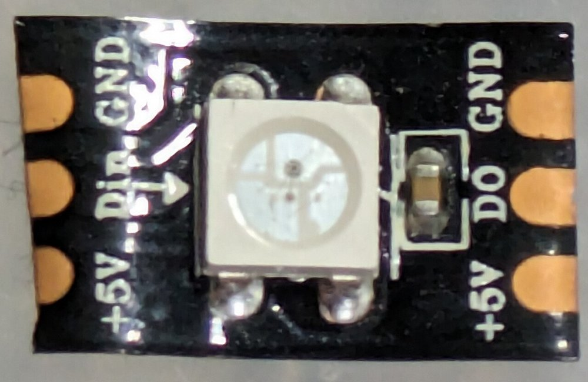 | 1. Addressable LED strip | 1 metre | WS2812B-2020-V6, 60 LED/m, bare, 3 wires |
| ☐ | 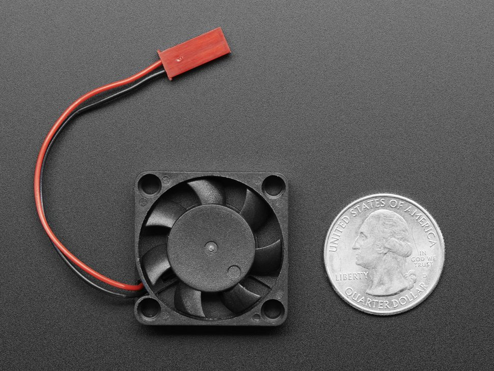 | 2. Cooling fan | 2 (one per drone) | 30×30×10 mm, 5 V, 2 wires, ≤ 0.15 A |
| ☐ | 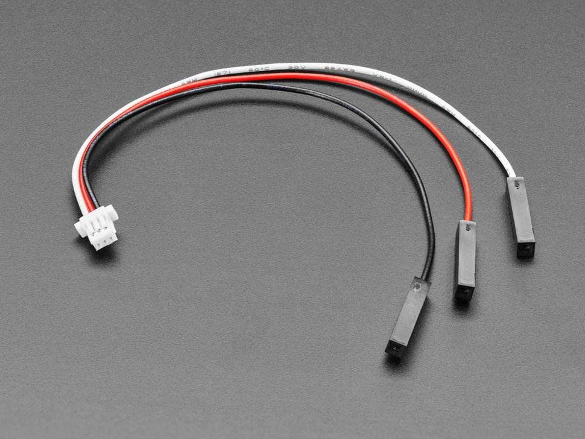 | 3. JST SH plug with wires (for J2) | 4 | JST SH 1.0 mm, 2-pin, pre-crimped wires |
| ☐ | 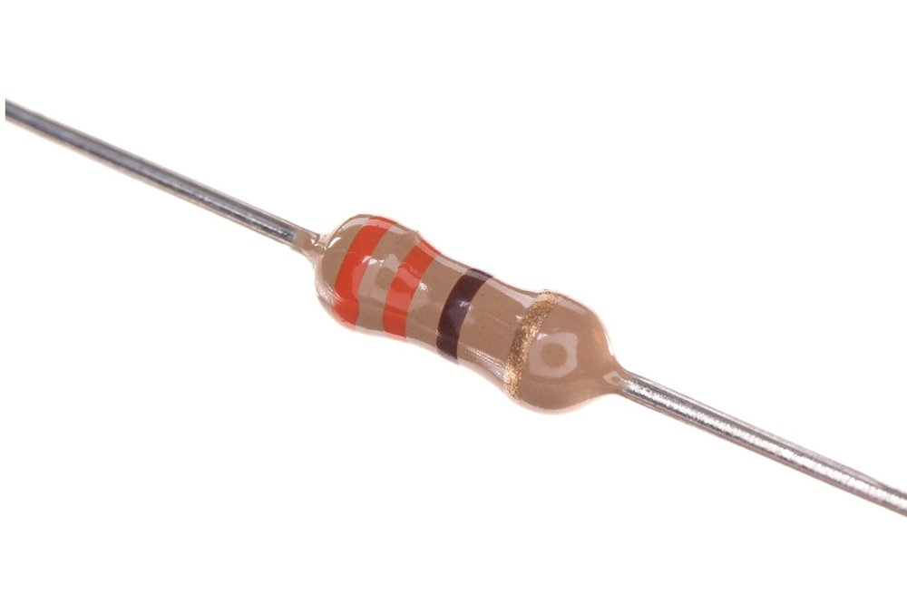 | 4. Resistors | 10 | 330 Ω (or 470 Ω), 1/4 W |
| ☐ | 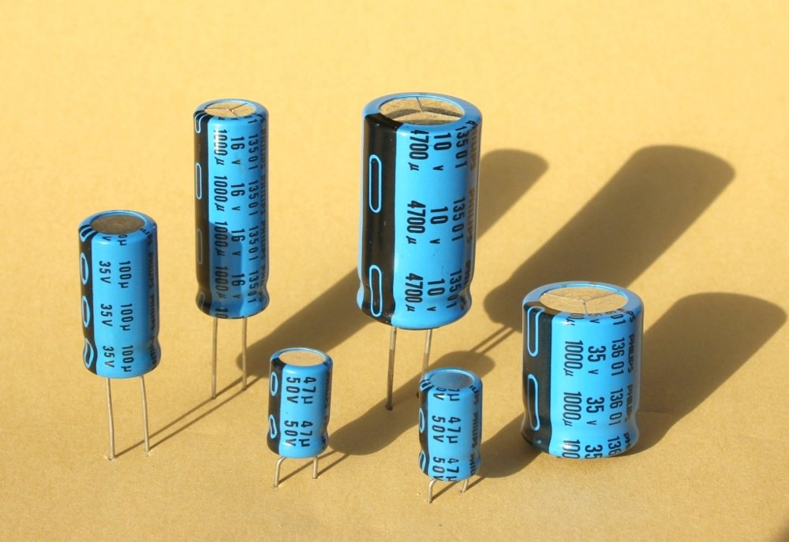 | 5. Capacitors | 4 × 470 µF + 6 × 100 nF | 470 µF 10–16 V electrolytic + 100 nF ceramic |
| ☐ | 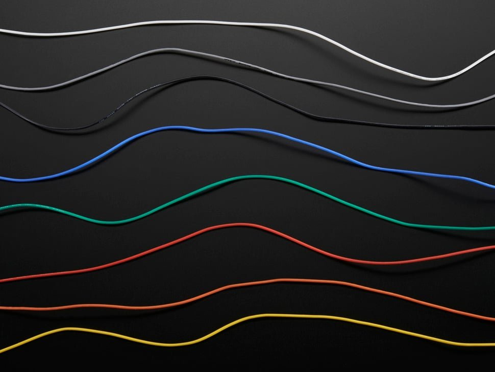 | 6. Silicone hook-up wire | ~2 m each, 3 colours | 26 AWG silicone, stranded, 3 colours |
| ☐ | 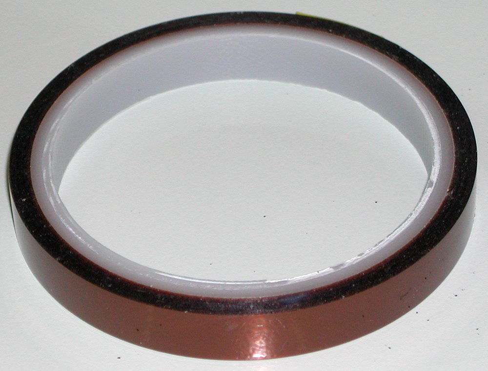 | 7. Kapton tape + heat-shrink | 1 roll + assortment | Kapton ~10 mm; heat-shrink 1.5–6 mm |
| ☐ | 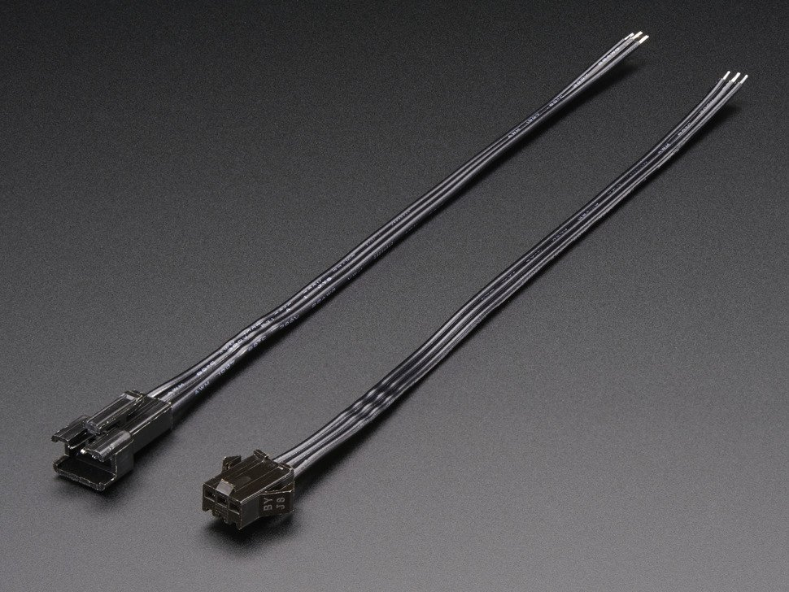 | 8. LED strip connector | 3 pairs | JST-SM 3-pin LED connector pairs |
PHASE 1 · buy now Sim Lim Square 1 Rochor Canal Road · hobby / FPV
| | Item | Qty | Key spec |
|---|
| ☐ | 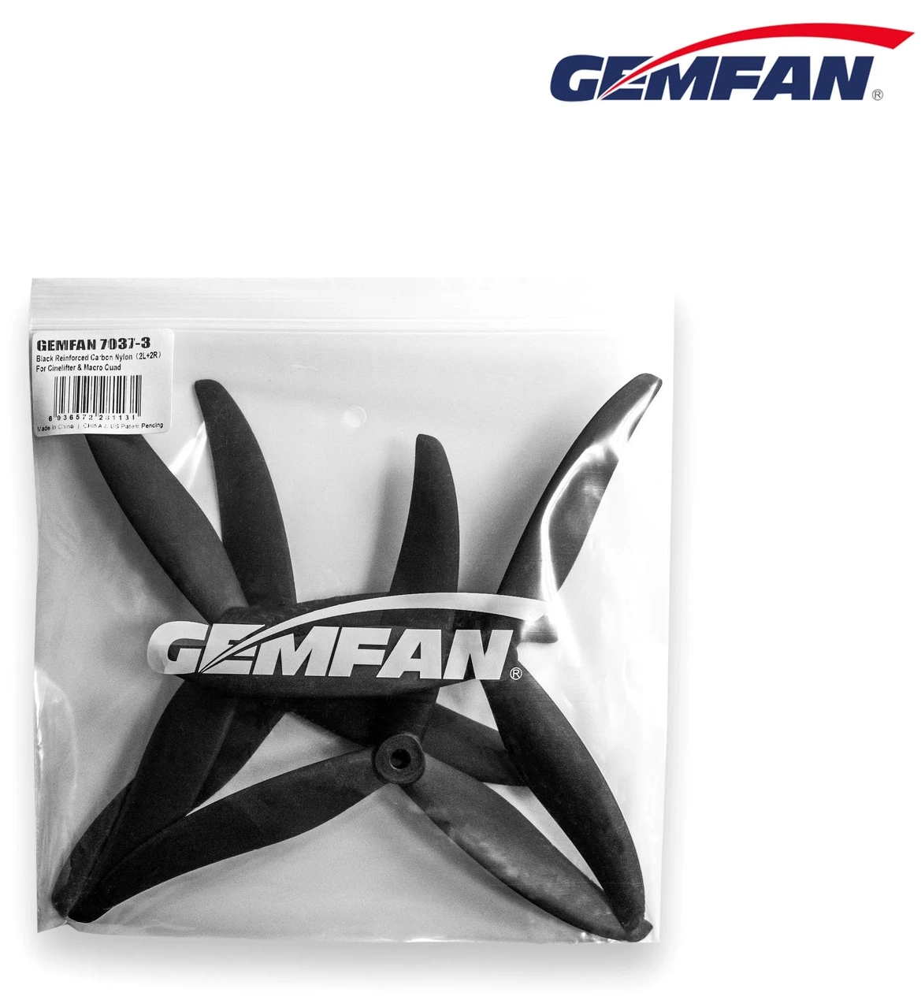 | 9. Propellers | at least 2 sets of 4 | Gemfan 7037-3: 7 in, 3.7 pitch, 3 blades, 5 mm hole |
PHASE 2 · don't buy yet — only if phase 1 fails
| | Item | Qty | Key spec |
|---|
| ☐ | 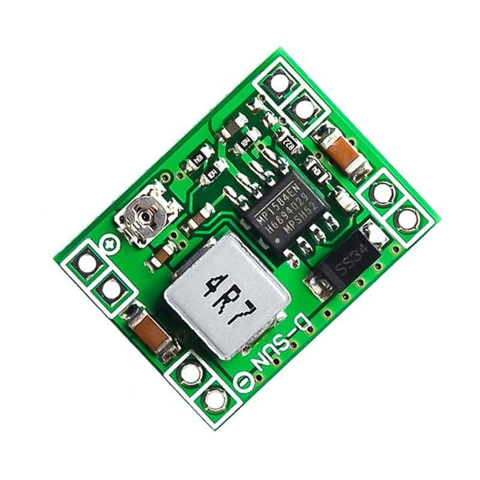 | 10. 5 V step-down (buck) module | 2 (+1 spare) | MP1584 (or Mini-360), 5 V out, ≥ 1 A |
| ☐ | 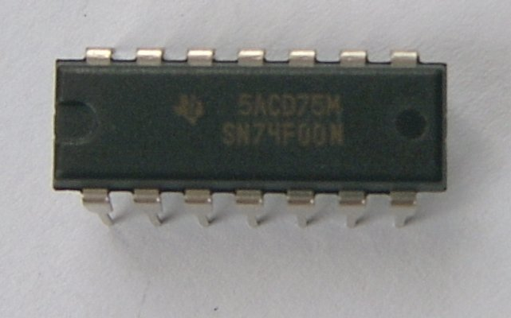 | 11. Level-shifter chip | 2 (+1 spare) | 74HCT125, DIP-14 |
| ☐ | 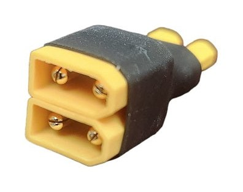 | 12. Peripheral power bus | XT30 parts · wire · JST-PH | XT30 pairs + XT30 1-to-2 splitter; 20 AWG silicone |
| ☐ | 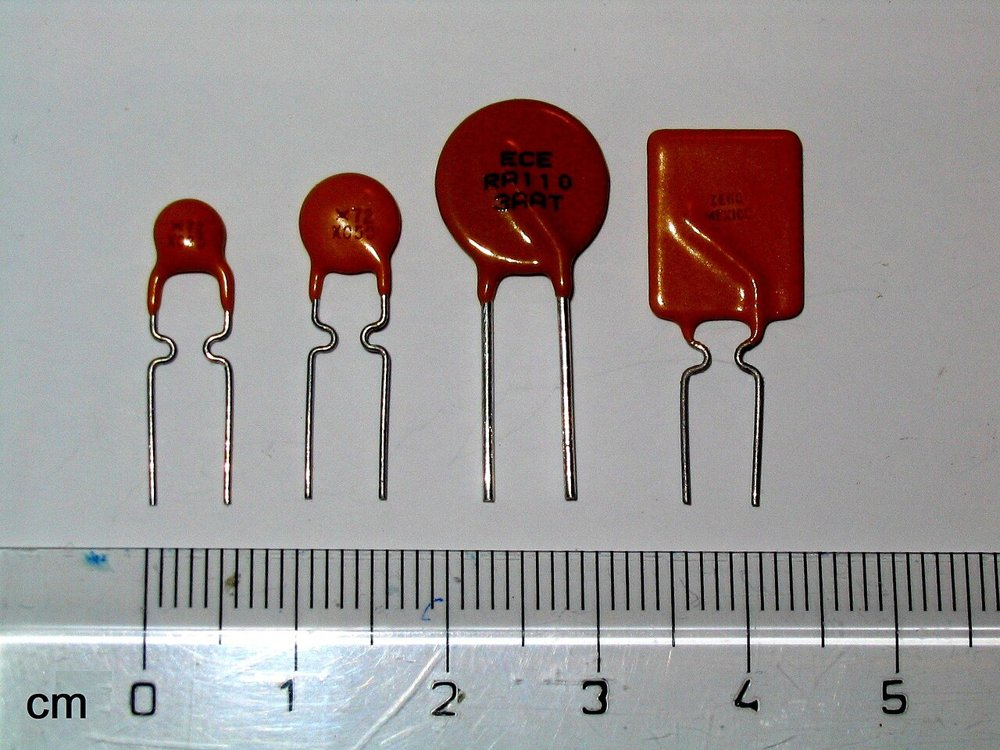 | 13. Resettable fuses (PTC) | 2 each: 0.5 A, 0.65 A, 0.2 A | PTC fuses 0.5 A, 0.65 A, 0.2 A hold, ≥ 30 V |
| ☐ | 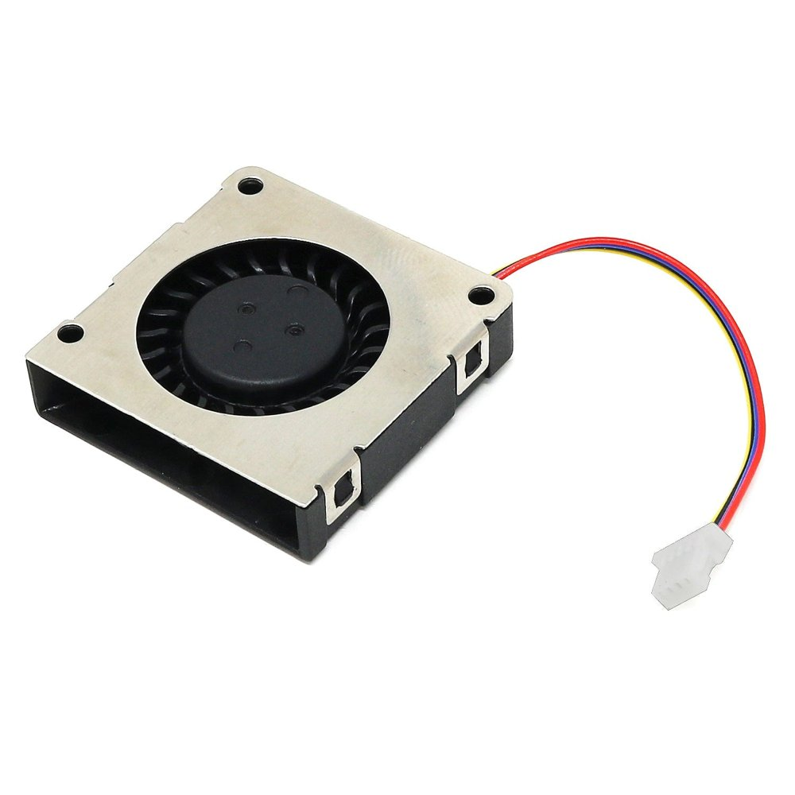 | 14. Fan alternatives | 1 each, only if needed | 12 V or 24 V 3010 fan for the battery; 3010 blower |
Bring
This sheet · the printed prop gauge and 30 × 30 × 10 fan block · a ruler or calipers
Every purchase
Ask each shop for a quote, and for an itemised receipt with the shop's name and GST number when you buy.
1 · LED strip
Starling 2 Max parts
1Addressable LED strip Sim Lim TowerBuy: 1 metre
covers both drones (2 × 16 LEDs) with spares
One bare WS2812B segment: 3 pads at each cut (+5V, Din/DO, GND)
Photo: John McMaster, Wikimedia Commons, CC BY 4.0
Ask for“Do you have WS2812B V6 addressable LED strip, the version that runs on 3.3 volts? The narrow kind with 2020 size LEDs, 60 per metre, no silicone sleeve.”
| Spec | Must be | Why |
|---|
| Chip | WS2812B V6: 5050 (WS2812B-B-V6), 3535 (Mini-V6) or 2020 | Their datasheets support a 3.3 V supply: in spec on the drone's 3.3 V pad. Test: all LEDs off draws only µA |
| Wires | 3: +5 V, data, ground | 4-wire strips need a clock line the drone doesn't have |
| Voltage | Sold as a “5 V” strip; the chip must be V6 | WS2812C and older WS2812B (3.7 V min) and SK6812 (3.5 V) run below spec at 3.3 V; 12 V strips won't light at all |
| LED spacing | 60 LEDs per metre (16.7 mm apart) | 4 LEDs fit on each ~75 mm arm |
| Width | 10 mm or less; 2020 strips are ~4–5 mm | The arms are about 10 mm wide |
| Finish | Bare (IP30), no silicone sleeve or tube | A sleeve makes it ~14.5 mm wide and heavier |
| Colours | RGB | The RGBW strips use SK6812, not rated for 3.3 V |
✗ Do not buy: WS2812C, SK6805 or SK6812 strips (not rated for 3.3 V) · APA102, DotStar, SK9822 or WS2801 (4 wires) · WS2815 (12 V) · Non-addressable RGB strip (whole strip one colour) · Silicone-sleeved or tube “waterproof” strip · 30 LEDs per metre (only 2 fit per arm)
✓ Check: Hold the strip against a ruler: 10 LEDs should span ~167 mm, and the width must be ≤ 10 mm.
Not in any Tower shop's online catalogue (checked 2026-10-25): call Sun-Light and 123 LED Lighting first. Online fallback (check the receipt suits the Concur claim): the listing must name the V6 chip. Any WS2812B or WS2812C still works on 3.3 V, below spec.
3–5 · J2 plug, resistors, capacitors
Starling 2 Max parts
3JST SH plug with wires (for J2) Sim Lim TowerBuy: 4
2 drones + spares; easy to damage
Shown: a 3-pin JST SH cable. Buy 2-pin
Photo: Adafruit (product 5765)
Ask for“JST SH, 1.0 millimetre pitch, 2-pin female plug, with the wires already crimped in.”
| Spec | Must be | Why |
|---|
| Family | JST SH, 1.0 mm pitch, 2-pin (housing SHR-02V-S) | Mates with the VOXL 2's fan port J2 |
| Wires | Pre-crimped, ~10–15 cm | Hand-crimping 1.0 mm contacts needs a special tool |
| If none | Any pre-made JST SH 1.0 cable to cut or de-pin (FPV shops at Sim Lim Square) | |
✗ Do not buy: SM02B-SRSS-TB (the board-side header) · JST PH / XH / ZH / GH sizes
Sun-Light #03-09 online (2026-10-29): none. If no shop has one, DigiKey 455-3013-ND.
4Resistors Sim Lim TowerBuy: 10
they cost cents
330 Ω: orange-orange-brown
Photo: oomlout, Wikimedia Commons, CC BY-SA 2.0
Ask for“330 ohm resistors, quarter watt.” (470 ohm is also fine.)
| Spec | Must be | Why |
|---|
| Value | 330 Ω (bands orange-orange-brown) or 470 Ω (yellow-violet-brown) | Protects the LED data line; anything 300–500 Ω works |
| Rating | 1/4 W, carbon or metal film, through-hole | Ordinary, smallest common size |
✗ Do not buy: SMD chip resistors (too small to hand-solder onto wires)
Sun-Light #03-09 online (2026-10-29): 330 Ω 0.5 W, S$0.03 each.
5Capacitors Sim Lim TowerBuy: 4 × 470 µF + 6 × 100 nF
Various sizes shown: buy 470 µF, 10–16 V. Stripe = negative leg
Photo: Elcap, Wikimedia Commons, CC0
Ask for“470 microfarad electrolytic capacitors, 10 or 16 volt, small size. And 100 nanofarad ceramic capacitors, code 104.”
| Spec | Must be | Why |
|---|
| 470 µF | 10–16 V radial electrolytic, ≤ 8 mm wide | Across + / GND at the start of each LED strip; stripe = negative leg |
| 100 nF | Ceramic, marked “104” | Across the fan leads (motor noise); spares for phase 2 |
✗ Do not buy: Large 25 V+ cans (heavy)
Sun-Light #03-09 online (2026-10-29): leaded 0.1 µF 25 V, S$0.20; no 470 µF (DigiKey P14394-ND if no shop has one).
6–8 · Wire, tape, LED connector
Starling 2 Max parts
6Silicone hook-up wire Sim Lim TowerBuy: ~2 m each, 3 colours
red, black and one other colour
26 AWG silicone stranded wire
Photo: Adafruit (product 1970)
Ask for“26 AWG silicone wire, stranded, in red, black and one other colour.”
| Spec | Must be | Why |
|---|
| Gauge | 26 AWG | Enough for the LED current; thin enough for the ESC's small solder pads |
| Insulation | Silicone | Doesn't melt back while soldering; flexes with vibration |
| Core | Stranded (many fine strands) | Solid core cracks with vibration |
✗ Do not buy: PVC hook-up wire · Solid-core wire
Sun-Light #03-09 online (2026-10-29): 30 AWG silicone only, S$20.00 (acceptable).
7Kapton tape + heat-shrink Sim Lim TowerBuy: 1 roll + assortment
Kapton tape: amber, thin
Photo: Jérôme, Wikimedia Commons, CC BY-SA 3.0
Ask for“Kapton tape, the amber polyimide kind, about 10 millimetres wide. A small heat-shrink assortment, 1.5 to 6 millimetres.”
| Spec | Must be | Why |
|---|
| Kapton width | ~10 mm (6–12 mm OK), polyimide, amber | Wraps the strip ends onto the 10 mm arms; heat-proof, holds under vibration |
| Heat-shrink | 1.5–6 mm assortment | Every solder joint; carbon fibre conducts |
| Phase 2 | 20 cm of 15–20 mm clear heat-shrink | Only with the buck module: insulates it and the chip |
✗ Do not buy: Electrical PVC tape (adhesive creeps) · Heat-shrink in large sizes only (> 10 mm)
Sun-Light #03-09 online (2026-10-29): Kapton 12 mm × 30 m S$7.00; 580-piece heat-shrink kit S$16.90.
8LED strip connector Sim Lim TowerBuy: 3 pairs
JST-SM 3-pin plug + receptacle pair
Photo: Adafruit (product 1663)
Ask for“3-pin JST SM LED strip connector pairs, plug and socket with wires.”
| Spec | Must be | Why |
|---|
| Type | JST-SM 3-pin, latching (the plug LED strips come with) | The whole LED ring unplugs from the ESC lead |
✗ Do not buy: Dupont jumpers (shake loose)
Sun-Light #03-09 online (2026-10-29): 2-pin pairs only (S$2.50); ask around for 3-pin.
9 · Propellers
Starling 2 Max parts
9Propellers Sim Lim SquareBuy: at least 2 sets of 4
each set is 2 clockwise + 2 counter-clockwise; props are consumables
The bag to look for: Gemfan 7037-3
Photo: OddityRC, Gemfan 7037-3 listing
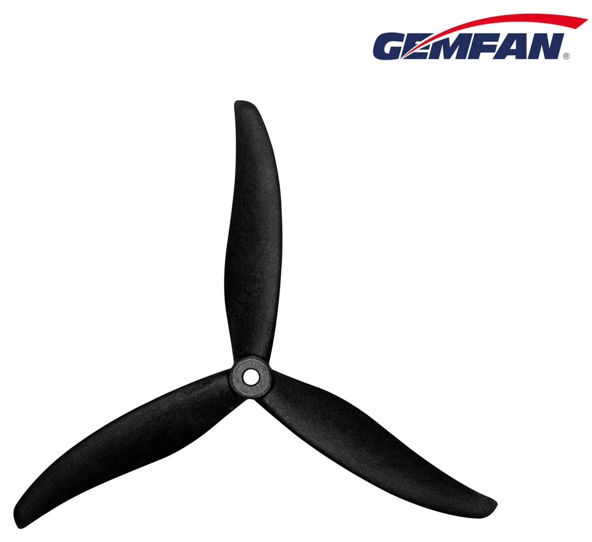
7037-3: three blades, 5 mm centre hole
Photo: OddityRC, Gemfan 7037-3 listing
Ask for“Gemfan 7037, three-blade, 7 inch, 5 millimetre centre hole.”
| Spec | Must be | Why |
|---|
| Diameter | 7 inch (178 mm) | Same as the drone's stock props |
| Pitch | 3.7 (3.5 acceptable) — never higher | Higher pitch overheats the small motors and the ESC |
| Blades | 3 | Matches stock |
| Centre hole | 5 mm (M5) | Fits the motor shaft |
| Hub | ~7 mm thick | Fits the prop nut |
| Rotation | Set must include both CW and CCW | Two motors spin each way |
| Label | “7037-3” or “7×3.7×3” | First number = diameter, second = pitch |
✗ Do not buy: 7040, 7042, 7045 or any “freestyle” prop (pitch too high) · Two-blade props (e.g. 7035-2) · 6 or 8 inch props · Props without a 5 mm centre hole
✓ Check: Lay it on your printed prop gauge: tips reach the outer ring; the hole fits the gauge's 5 mm hub.
Genuine ModalAI part: MRP-D0012-1-00 (US$29.99 / 4), online only.
10–11 · Buck module, level shifter
Starling 2 Max parts
Phase 2 — only if phase 1 fails. If the LED strip misbehaves on the drone's 3.3 V pad, it moves to its own 5 V buck module with a 74HCT125 on the peripheral power bus. If the fan causes trouble on J2, a 12 V or 24 V fan can run straight off the battery through the bus with a 0.2 A fuse.
105 V step-down (buck) module Sim Lim Tower Phase 2 · only if neededBuy: 2 (+1 spare)
one per drone: powers the LED strip and the fan
MP1584EN (~22 × 17 mm)
Photo: Kunkune
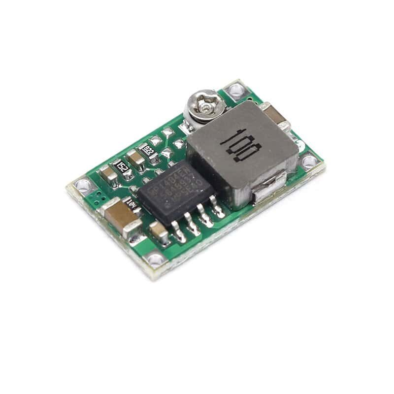
Mini-360 (~17 × 11 mm)
Photo: Kunkune
Ask for“An MP1584 step-down buck converter module. A Mini-360 is also fine.”
| Spec | Must be | Why |
|---|
| Output | 5.0 V, 1 A or more (MP1584 ~3 A) | Powers the LED strip and fan, separately from the flight computer |
| Input | Accepts ≥ 17 V (MP1584 28 V, Mini-360 23 V max) | Runs from the 4S battery, up to 16.8 V |
| Size | MP1584 ~22 × 17 mm; Mini-360 ~17 × 11 mm | Light; mounts at an arm root |
| Adjustable? | Trim screw: set 5.0 V with a multimeter before use | Often shipped at another voltage |
✗ Do not buy: Linear 7805 regulators (would burn ~6 W as heat) · Big LM2596 boards (heavy)
11Level-shifter chip Sim Lim Tower Phase 2 · only if neededBuy: 2 (+1 spare)
Shown: a 74-series DIP-14 chip. Buy 74HCT125
Photo: Stefan Riepl, Wikimedia Commons, public domain
Ask for“74HCT125, the quad buffer chip, in DIP-14.” (The letter T matters.)
| Spec | Must be | Why |
|---|
| Part | 74HCT125 (or 74AHCT125) | Raises the drone's 3.3 V LED data signal to 5 V for the strip |
| Package | DIP-14 (through-hole) | Easy to hand-solder onto a scrap of perfboard |
| With it | a 100 nF ceramic capacitor (item 6) and a small perfboard scrap | Standard decoupling for logic chips; keeps the assembly tidy |
✗ Do not buy: 74HC125 or 74LS125 (wrong input levels)
✓ Check: If there's no 74HCT125 anywhere: RS Singapore / element14 Singapore stock it online.
12 · Peripheral power bus
Starling 2 Max parts
12Peripheral power bus Sim Lim Square Phase 2 · only if neededBuy: XT30 parts · wire · JST-PH
4 XT30 male + female pairs; 2 × 1-to-2 parallel splitters; 20 AWG silicone, 0.5 m each of red and black; 6 JST-PH 2-pin pairs
1 in → 2 out, parallel. A short cable “Y” version is also fine
Photo: Pyrodrone (XT30 Parallel Adapter)
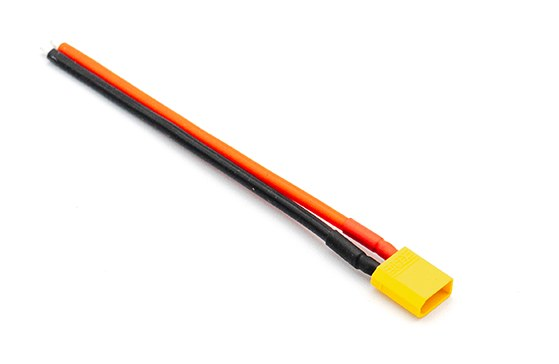
XT30 plug with leads: buy male + female
Photo: Rotor Riot (XT30 Pigtail)
Ask for“XT30 connectors, male and female pairs, and XT30 one-to-two splitter leads. Also 20 AWG silicone wire, red and black.”
| Spec | Must be | Why |
|---|
| XT30 | The small yellow FPV battery plug (half the size of an XT60); male + female | Rated ~15 A; the standard small drone power plug |
| Splitter | 1 × XT30 in → 2 × XT30 out, parallel | Branch 1: LED/fan buck. Branch 2: future companion |
| Wire | 20 AWG silicone, red + black | Battery-side bus, sized for a future companion (~1.5 A) |
| Plugs | JST-PH 2.0 mm 2-pin pre-crimped pairs × 6 | Fan ↔ supply; ESC LED pads ↔ level shifter |
✗ Do not buy: XT60 (too big) · Series splitters (must be parallel)
✓ Check: The splitter's single side plugs into the bus pigtail from the ESC; its two sides feed the LED/fan buck and (later) the companion. Both outputs must carry the same + and −.
Where to go
Call ahead: stock and unit numbers change
Sim Lim Tower 10 Jalan Besar — electronic components
| Shop | Unit | Try here for |
|---|
| J.C.W. Electronic | — | Fans — call first; LED strip |
| Sun-Light Electronics | #03-09 | LED strip — call first, 6299 8803. Online it lists only a 30 LED/m 5050 WS2812B (no V6): a bench stopgap |
| 123 LED Lighting | #03-41 | LED shop — call first, 8793 9683. Online catalogue is 12 / 24 / 230 V lighting strip only; ask for WS2812B V6 (5050), 5 V |
| Davjones Technology | #B1-47/11 | Phase 2: buck modules, 74HCT125, PTC fuses |
| Continental Electronic Enterprise | #B1-25 | Resistors, capacitors, JST connectors, wire, tape, heat-shrink |
From a shop directory about two years old. No online listing confirms the fans, blower or 74HCT125 in stock anywhere in Sim Lim — call first.
Sim Lim Square 1 Rochor Canal Road — hobby / FPV
| Shop | Unit | Try here for |
|---|
| Hobby Square | #02-60 | Propellers; phase 2 XT30 bus parts; also silicone wire and JST SH cables if the Tower has none. Listed hours Mon–Sat 12:30–7:30 pm |
If Hobby Square has no 7037 props
| Shop | Where | Notes |
|---|
| Sky Hobbies | Jalan Sultan | skyhobbies.com.sg · large HQProp stockist |
| Helicopter Smartfly | Queensway Shopping Centre | smartfly.com.sg · Mon–Sat 12–7 pm, Sun 3–7 pm, closed Wednesday |
| Rotor Hobby | Kitchener Complex, French Road | shop.rotor.com.sg · +65 6296 3686 |
| OddityRC | Paya Lebar Square (pickup) | oddityrc.com · stocks Gemfan 7037-3 online; allow 5–8 days |
Other fallbacks
| Fans | Amicus, 8 Ubi Road 2 #03-13 Zervex · +65 6980 6783 · 5 V fans by order; call first |
| Online, Singapore | Cytron SG and Kuriosity.sg (LED strip, buck modules) · RS Singapore and element14 Singapore (74HCT125, Sunon fans; fast delivery) · DigiKey (a few days) |
| Online, blower | 3D-printer parts sellers and local Shopee sellers (“3010 blower 5V”) |